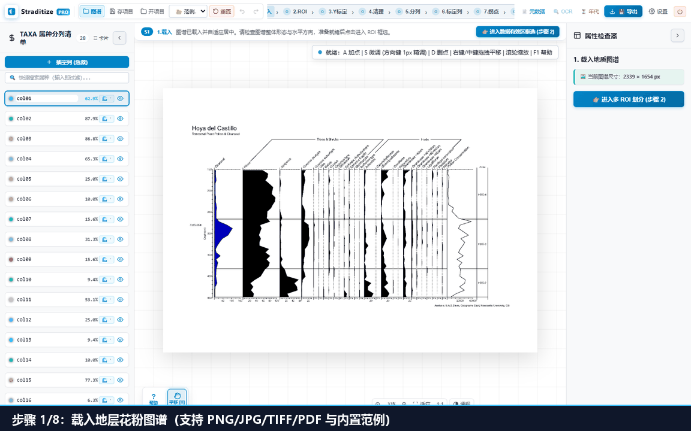

Straditize Pro
v2.0
摆脱通用折线工具对多指标图谱的低效手工描点与“伪空值（Pseudo-NA）”困扰。融合计算机视觉、PP-OCRv6 拉丁学名识别、两点物理标定与贝叶斯年代学模型，一键提取出版级完整数据矩阵。

从单曲线离散采集到多列并发地学解译，解决地层学与古生态学真正的研究痛点
rioja 绘图与 vegan 分析。0.00，直接对接生态学模型。B 键实时切换红白掩膜，所见即所得。兼具严谨的数学几何核心与现代极速交互视口，重新定义图谱数字化行业水准
集成离线 PP-OCRv6 视觉模型，支持 0°~60° 多角度旋转文本投影识别。内置 500+ 花粉、硅藻、微体古生物分类词库，自动纠正常见拼写错误。
坐标标定与取数裁剪框彻底物理解耦。原点锚定基线，刻度钉精确对齐任意印刷刻度齿，原生支持线性（Linear）与对数（Log）双尺度。
沿地层共识采样深度横向截交全属种多边形轮廓。未检出层位赋予严格真值 0.00，产出规范完整的矩阵，彻底杜绝破坏统计模型的伪空值。
从图谱中直接解译沉积年代模型的中位数与 95% 置信包络线；在速率空间利用高斯过程重构 1000 条单调年代学集合，实现不确定性无损传递。
对齐专业地层制图规范，一键导出清洗完备的 CSV/Excel 矩阵，并自动生成配套的 rioja::strat.plot 绘图脚本，开箱即得学术出版级图表。
项目完整归档为 POSIX UStar 标准 .tar 开放工程包（含原图、矢量模型、矩阵与脚本），集成 LiPD v1.3 元数据，100% 满足学术评议复现要求。
状态机架构驱动，顶部胶囊清晰指示阶段进度，已完成步骤可随时自由回跳微调
支持 PNG/JPG/TIFF 及单页 PDF；Radon 变换自动检测扫描微倾斜并完成水平校正。
多 ROI 分组管理，将数据曲线区与图名、图例、深度标尺和聚类树彻底物理隔离。
两点式物理映射深度（或年代）坐标，配置单位（cm、m、cal yr BP），支持正反向递增。
智能过滤水平网格线；按键盘 B 键开启二值化透视遮罩，受保护门禁避免截断花粉带。
自动探测列基线；调用 PP-OCRv6 离线识别拉丁学名，500+ 分类词典自动纠错吸附。
两点式刻度钉对准刻度齿；属种列组统一应用；内置对数（Log）尺度有效性拦截保护。
提取显著拐点多边形；提取共识采样层位；支持提取 Bacon 年代模型及 95% 置信区间。
执行 $\sum\% \approx 100\%$ 生态学自洽检验；一键导出无 NA 矩阵、LiPD 与 riojaPlot 脚本。
无需繁琐的数据转置与空值修补，导出成果直通主流科研工具
开箱即用的 strat.plot 地层绘图、CONISS 约束聚类与 CCA/RDA 排序分析
年代学不确定性 1000 集合传递，深度剖面贝叶斯沉积速率连续建模
符合国际古气候数据库（Neotoma / NOAA）FAIR 原则的标准 JSON-LD 结构
规范二维表格、首列固定深度、严谨无伪 NA，直接输入任意统计与机器学习管线
提供开箱即用的 Windows 预编译安装包，亦支持全功能源码部署
内嵌独立 Python 计算环境、ONNX Runtime 推理引擎与 PP-OCRv6 离线权重。双击安装自动创建桌面快捷方式，电脑无需配置任何环境即可运行。
解压即用，不修改系统注册表。适合存放于 U 盘随身携带，或在实验室公用计算机、无管理员权限的教学机房中直接运行。
通过 Git 克隆源码，基于 Pixi 或 Conda 一键管理环境。支持在无界面的 Linux 高性能计算节点后台运行并通过 SSH 隧道远程访问。
Straditize Pro 基于 GNU GPL-3.0-or-later 协议完全开源，欢迎在论文与研究成果中引用